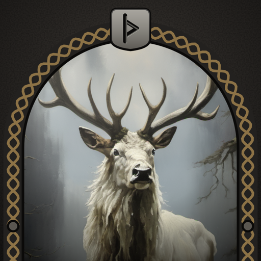

Privacy Policy
Last updated 19 November 2026
In short: Hollowmere doesn't collect, store or share any of your personal data. There are no accounts, no ads and no tracking.
This policy covers the Hollowmere: Medieval Saga app for iPhone (“Hollowmere”, “the game”). It's made by one independent developer (“we”, “us”).
What we collect
Nothing. The game doesn't send any information about you or how you play to us or to anyone working for us. It has no analytics, no advertising, no crash reporting and no tracking of any kind, and it doesn't use the advertising identifier.
Your saved game
Your progress is saved in two places, and we can't see either:
- On your iPhone, inside the app. Deleting the app deletes this copy.
- In your own iCloud, so your progress can follow you to your other devices signed in to the same Apple Account. This uses Apple's iCloud storage. Only your Apple Account can read it. You can turn iCloud off for the game in the Settings app.
The game's Saves page can also make a save code, a piece of text you copy yourself. It goes only where you choose to put it.
Game Center
If you're signed in to Game Center, the game sends your scores and achievements to Apple's Game Center for the leaderboards and achievements, and shows Game Center's leaderboards inside the game. Game Center is run by Apple under Apple's privacy policy. We don't receive your Game Center details. You can sign out of Game Center in the Settings app; the game works the same without it.
Purchases
The game sells one thing, the Full Saga, through Apple's In-App Purchase. Apple handles the payment through the App Store under Apple's privacy policy. We never see your payment details. The App Store tells the game on your device that the purchase was made, so it can open the regions, and Restore Purchases asks the App Store again on a new device.
Links out of the game
The game links to our Discord community. The link opens outside the game, and Discord's own privacy policy applies there.
Children
Because the game collects no personal data from anyone, it collects none from children either.
Changes to this policy
If the game ever starts handling data differently, this page will be updated before that version is released, and the date at the top will change.
Contact
Questions about privacy: support@playhollowmere.com